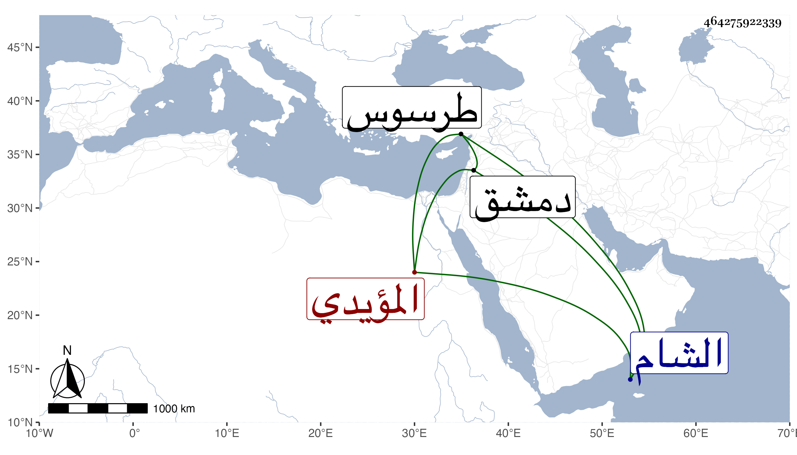

0902Sakhawi.DawLamic.ITO20230111-ara1.EIS1600.464275922339
Biography ID: 464275922339
784
خير بك المؤيدي شيخ الأجرود . صار بعد أستاذه خاصكيا إلى أن نفاه الأشرف إلى الشام حمية لجانبك اليشبكي جحا ثم أنعم عليه بإمرة هناك ثم جعله الظاهر من مقدميها ثم اتابكها ثم أمسكه في سنة ست وخمسين وحبسه لأمر اقتضاه ولم يلبث أن أطلقه ، وأقام بدمشق بطالا إلى أن طلبه فألبسه نيابة طرسوس وهو متكره ثم أعفاه إلى أن أعطاه تقدمة دولات بأي المؤيدي واستمر حتى مات بعد مرض طويل في ربيع الآخر سنة تسع وخمسين وهو في حدود الستين بداره المواجهة لمصلى المؤمني وصلى عليه بالمصلي المذكور ولم يحضر السلطان ولا ابنه
